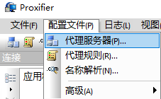
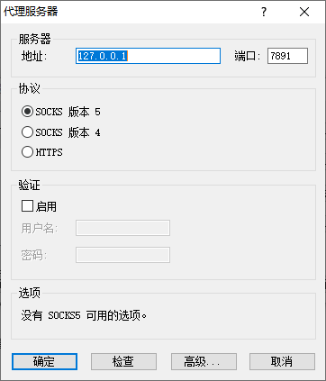
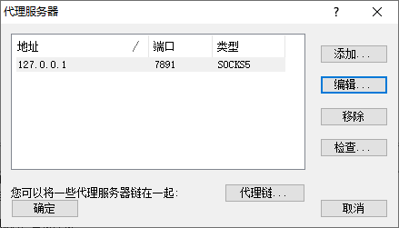
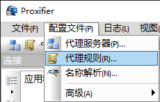
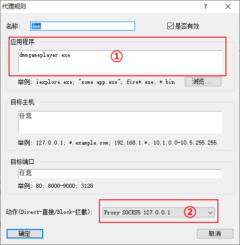
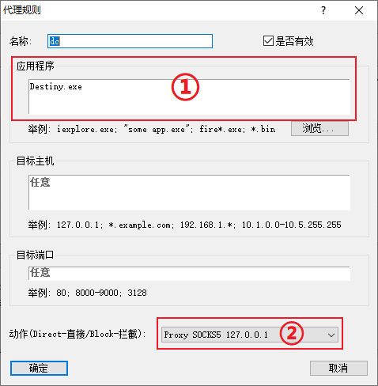
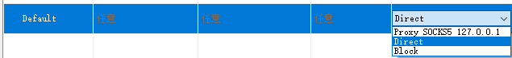
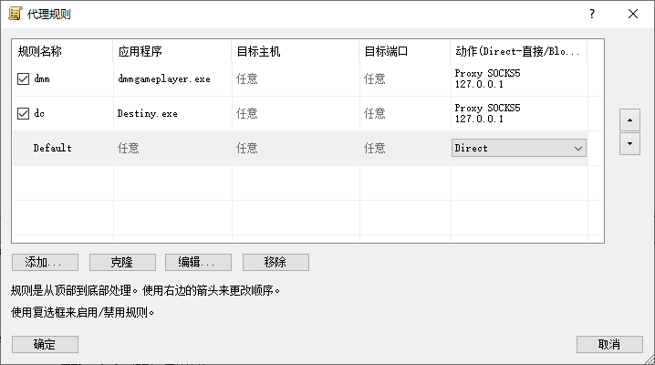

天命之子 PC 端代理方法
★注意：如果使用 岛风Go/ACGP，这两个软件会自动帮你修改 .\rt\lib\net.properties 文件，所以请先将 DMM安装目录下 .\rt\lib\net.properties 删除或者替换成未被修改的版本
0x00 软件环境
系统 Windows 10
Proxifier
任意科学上网工具
0x01 配置过程
1. 首先打开代理服务器配置

2. IP 填 127.0.0.1，端口看自己科学上网的本地端口

3. 代理服务器配置完成图

4. 接下来配置代理规则

5. 将 dmm 进程加入代理规则中，①处填写 dmm 的进程（dmmgameplayer.exe） ②处选择服务器，也就是刚才添加的

6. 将 dc 进程加入代理规则中，①处填写 dc 的进程（Destiny.exe） ②处选择服务器，也就是刚才添加的

7. Default 选择 Direct

8. 代理规则配置完成图
